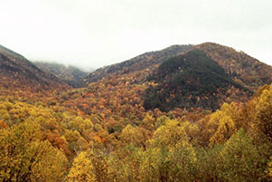

<!DOCTYPE html>
<html>
  <head>
    <meta charset="UTF-8">
    <meta name='viewport' content='width=device-width, initial-scale=1.0, maximum-scale=1.0, user-scalable=no'>
    <title>Vectors (API) | Examples | NPMap.js</title>
    <link rel="stylesheet" href="../dist/npmap.css"/>
    <script src="../dist/npmap.js"></script>
    <style>
      body {
        margin: 0;
        padding: 0;
      }
      #map {
        bottom: 0;
        position: absolute;
        top: 0;
        width: 100%;
      }
    </style>
  </head>
  <body>
    <div id="map"></div>
    <script>
      var map = L.npmap.map({
        baseLayers: [
          'nps-neutralTerrain'
        ],
        center: {
          lat: 35.574682600980914,
          lng: -83.54690551757812
        },
        div: 'map',
        overlays: [{
          attribution: 'Land Resources Division',
          clickable: false,
          path: 'base_data/boundaries/parks/grsm.topojson',
          repo: 'data',
          style: 'parks',
          type: 'github',
          user: 'nationalparkservice'
        }],
        zoom: 10
      });

      L.rectangle([[35.7, -83.9], [35.7, -84.5], [35.6, -84.5], [35.6, -83.9]], L.npmap.preset.colors['chill'])
        .addTo(map)
        .bindPopup('<p>I am a rectangle.</p>');
      L.circle([35.631628173298424, -83.30108642578125], 3000, {
        color: '#ce195b',
        fillColor: '#ce195b'
      })
        .addTo(map)
        .bindPopup('<p>I am a circle.</p>');
      L.marker(map.getCenter(), {
        icon: L.npmap.icon.gnocchi({
          name: 'airport-white',
          size: 'large'
        })
      })
        .addTo(map)
        .bindPopup('<div class="title">Great Smoky Mountains National Park</div><p>Ridge upon ridge of forest straddles the border between North Carolina and Tennessee in Great Smoky Mountains National Park. World renowned for its diversity of plant and animal life, the beauty of its ancient mountains, and the quality of its remnants of Southern Appalachian mountain culture, this is America\'s most visited national park.</p>');
      L.polygon([[35.4640255, -83.95065], [35.43829554, -83.949279], [35.4382955, -84.04266347]], L.npmap.preset.colors['currant'])
        .addTo(map)
        .bindPopup('<p>I am a polygon.</p>');
    </script>
  </body>
</html>
